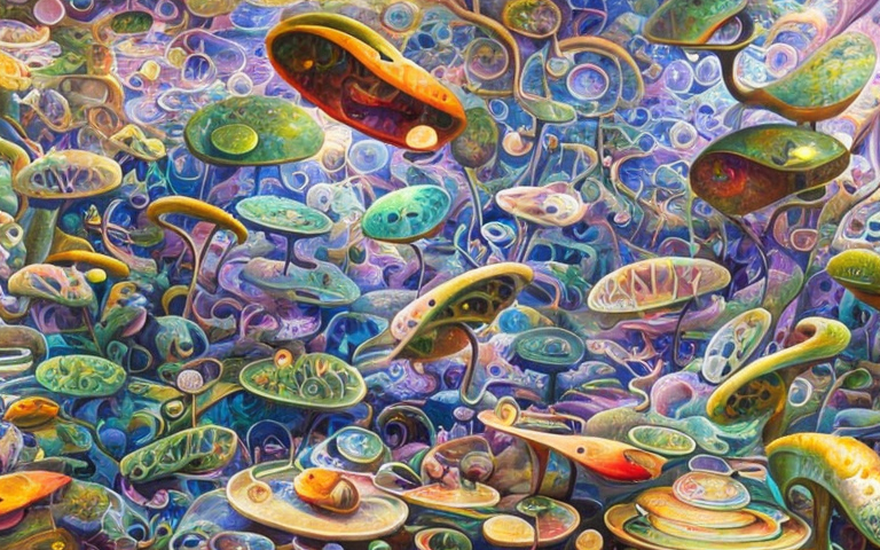
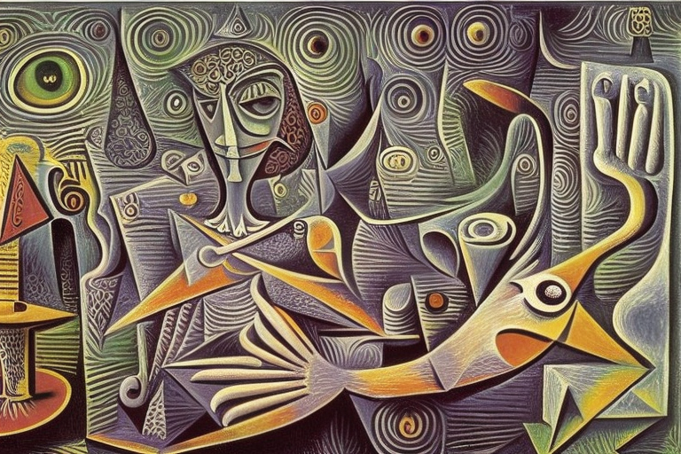
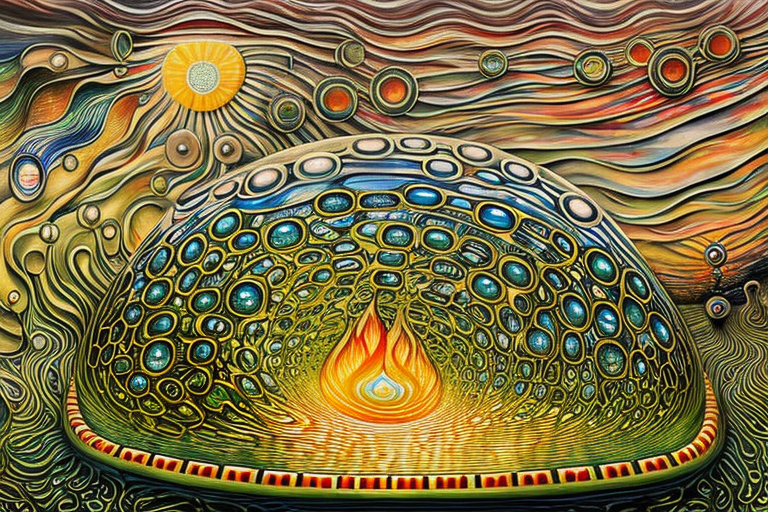
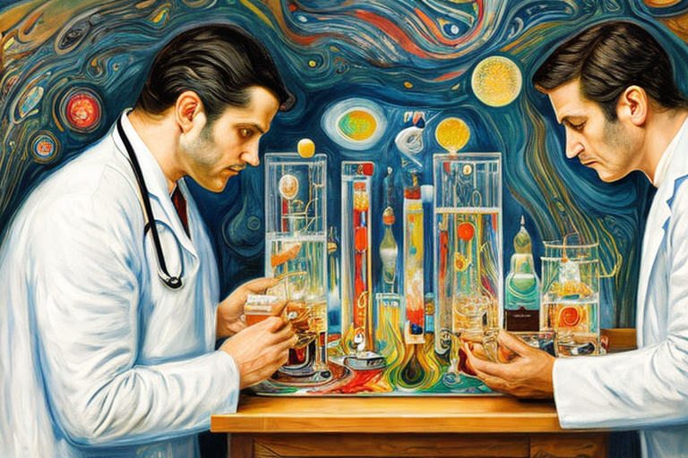

The Microbium tetrapod and the petri dish experiments
HOME
Table of Contents
Unity in the petri dish

In the vast expanse of a petri dish, there lived a colony of single-celled bacteria. These bacteria, known as the Microbium genus, were a hardy bunch. They had seen their share of struggles, from antibiotic assaults to harsh environmental conditions. However, they never shirked away from a challenge, for their motto was “grow or die trying.”
One day, as they were swimming about in their liquid solution, they encountered a big and scary bacteria cell. This cell was of a different genus altogether, and its size dwarfed the Microbium cells. The Microbium cells were understandably frightened, for they knew that this big and scary cell could easily consume them.
But the Microbium cells were not ones to give up easily. They huddled together, using their slimy appendages to clump up into a larger mass. They knew that by joining forces, they could become bigger than the big and scary cell, and perhaps even overpower it.
As they came together, the Microbium cells transformed into a complex multicellular organism. They formed a ball-shaped structure, with a protective layer of slime coating their exterior. They moved slowly but steadily towards the big and scary cell, ready to face their greatest challenge yet.
The big and scary cell saw the approaching Microbium colony and recoiled in fear. It had never encountered such a sight before and didn’t know how to react. The Microbium colony, emboldened by their newfound strength, attacked the big and scary cell with all their might. They pummeled it with their slimy appendages, slowly but surely wearing it down.
The battle raged on for hours, but eventually, the Microbium colony emerged victorious. The big and scary cell was vanquished, and the Microbium colony had proved that even the smallest of organisms could triumph over the largest.
Cellular differentiation
After their victory over the big and scary cell, the Microbium colony continued to swim around in the petri dish. They were safe in the sterilized environment and had no predators to worry about. They had grown stronger and more resilient, and their newfound unity had only made them stronger.
As they swam, they noticed something strange about one of their cells. This cell, which was a bit larger than the others, had a peculiar shape. Its membrane was slightly thicker, and it had protrusions that looked like mouth and ears. The other Microbium cells were curious and asked the cell what was going on.
The cell, which was the head of the Microbium colony, explained that it had undergone a transformation. It had taken on the role of the leader of the colony, and its shape had changed to reflect that. It had grown thicker membranes and protrusions that acted like mouth, allowing it to communicate with and direct the other cells.
The other Microbium cells were amazed at this transformation. They had never seen anything like it before. They asked the head cell how it had done it, and it explained that it had used a process called cellular differentiation. By activating certain genes, it had triggered a cascade of biochemical reactions that had caused its shape and function to change.
The Microbium colony was fascinated by this process, and they decided to try it themselves. They experimented with different combinations of genes, trying to trigger different types of differentiation. They found that by activating certain genes, they could create cells with different shapes and functions.
Eventually, they settled on a configuration that worked best for them. The head cell remained as the leader, with three cells as hands and only one as a leg. This configuration allowed them to move around efficiently and communicate effectively. They called themselves the Microbium tetrapod, after the four-limbed creatures of ancient times.
As they swam around, the Microbium tetrapod encountered other colonies of bacteria. They were amazed at how diverse and complex the microbial world was. They learned new things from each encounter and incorporated them into their own genetic code. They were becoming more and more sophisticated with each passing day.
One day, as they were exploring a new area of the petri dish, they noticed a strange glow coming from the corner. They swam over to investigate and found that the glow was coming from a patch of bioluminescent bacteria. They were amazed by the beauty of the glow and decided to incorporate it into their own genetic code.
Using their newfound knowledge of cellular differentiation, they activated the genes that would allow them to produce their own bioluminescence. They glowed a bright green, illuminating the entire petri dish.
The dilemma of adaptation

The head of the Microbium tetrapod looked down at the three hands and sighed. “Listen, guys, we gotta make a change. We need two legs to move efficiently and we can’t keep swimming around with just one. So, one of you is gonna have to become a leg.”
The hands looked at each other in disbelief. “A leg? Are you kidding me?” one of them said. “I don’t want to be a stinky smelly leg. That’s not what I signed up for.”
The head shook its membrane. “Look, I know it’s not ideal, but we need to adapt to our environment. And besides, we can’t keep arguing like this. We’re a team, and we need to work together if we’re gonna survive.”
The hands continued to argue with each other, each one insisting that they couldn’t be the one to become a leg. “I’m not doing it,” one of them said. “I’m not sacrificing my shape and function just so we can have two legs. That’s ridiculous.”
The head of the Microbium tetrapod sighed again. “Okay, fine. If none of you are willing to become a leg, then I’ll just have to make the decision for you. It’s not easy being the leader, you know. Sometimes you have to make tough choices.”
And with that, the head activated a series of genes that caused one of the hands to transform into a leg. The other hands looked on in horror as their former teammate became something entirely different. The new leg was unhappy about its new role in the Microbium tetrapod. It stunk, it was smelly, and it didn’t feel like it belonged. “This sucks,” it said. “I hate being a leg. Why couldn’t one of you have done it instead?”
The other hands didn’t respond. They felt guilty about not stepping up to become the leg themselves, and they knew that the new leg was unhappy because of their selfishness. They resolved to work together better in the future, to avoid situations like this.
Fulfilling a scientific destiny

The Microbium tetrapod swam around in the petri dish, feeling proud of their new configuration with two legs. Suddenly, the door to the lab opened and a gust of air rushed in. Before they knew it, they were attacked by a strong chemical substance.
The substance was so powerful that it disintegrated one of their legs and one of their hands. The Microbium tetrapod tried to swim away, but it was too late. The chemical was too strong and they were helpless against it.
As they dissolved, the Microbium tetrapod couldn’t help but wonder why they were being subjected to this punishment. They had done nothing wrong, and yet they were being destroyed without mercy. In their last moments, they looked up at the scientists who were observing them. They could see the joy and happiness in the scientists’ eyes as they realized that their experiment had succeeded.
But the Microbium tetrapod had learned something important. They had learned that even the strongest and most unified group could be brought down by external forces. They had learned that sometimes, no matter how hard you try, things just don’t work out.
As they faded away into nothingness, the Microbium tetrapod realized that they had been part of something bigger than themselves. They had been part of a grand experiment, and even though they had failed, they had contributed to the advancement of science.
And so, even in death, the Microbium tetrapod felt a sense of pride and purpose. They had lived their lives to the fullest, and they had made a difference in the world of microbiology.
A medical breakthrough

The two scientists looked at each other in disbelief. They couldn’t believe what they had just witnessed. The liquid substance that had destroyed the Microbium tetrapod to smaller amino acids was a game changer.
“I mean, who cares what cells it kills, right?!” exclaimed one of the scientists.
“Exactly!” replied the other. “This could be the next big thing in pharmaceuticals! It doesn’t matter if it kills some cells more than usual, people love a substance that just kills things!”
The two scientists high-fived each other and rushed off to their lab to start working on the formula for the new substance. They knew that it was going to be a market success.
As they worked, they couldn’t help but feel a sense of excitement. This was going to be their big break. They were going to make a name for themselves in the pharmaceutical industry.
Days turned into weeks, and weeks turned into months. Finally, they had the formula for the new substance. They tested it on a variety of cells and found that it killed almost all of them. They knew that they had something special.
They rushed to patent the formula and began pitching it to pharmaceutical companies. Within weeks, they had several offers on the table. They settled on a deal with a large pharmaceutical company that promised to make them both millionaires.
As they celebrated their success, the two scientists couldn’t help but think back to the Microbium tetrapod. They felt a twinge of guilt knowing that their success had come at the expense of those tiny creatures.
But they quickly pushed those thoughts aside. They were on top of the world now, and nothing was going to stop them. They had made it in the world of pharmaceuticals, and they were going to enjoy every minute of it.